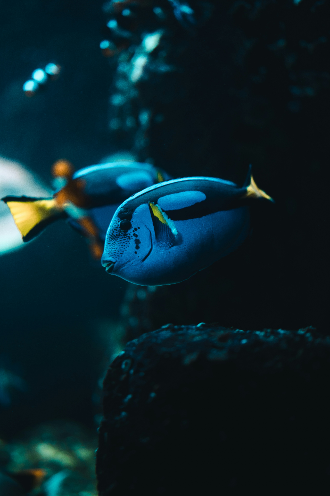
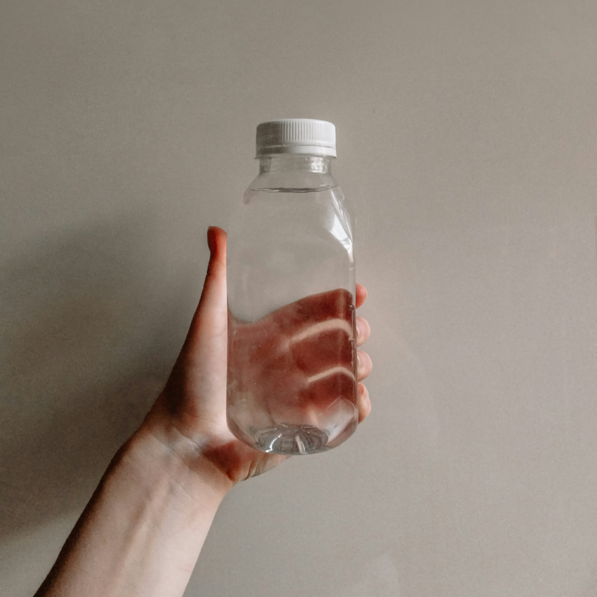
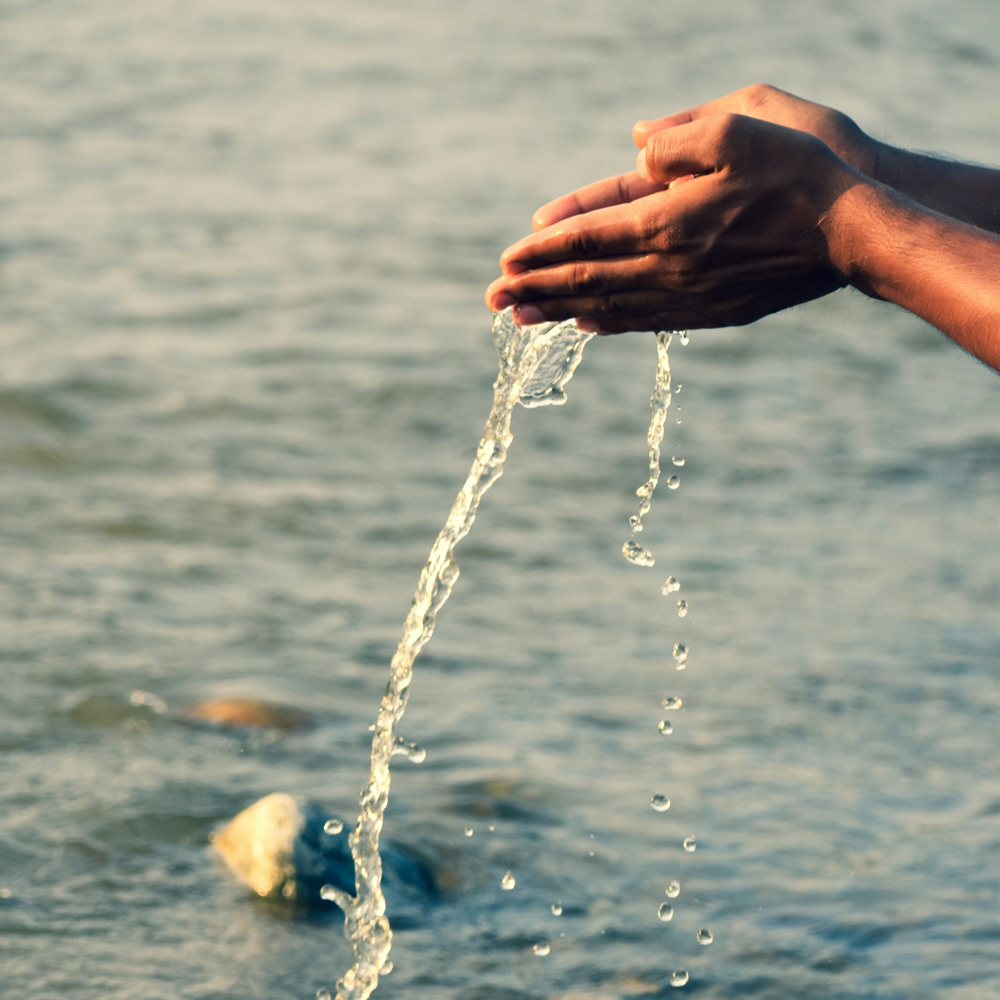
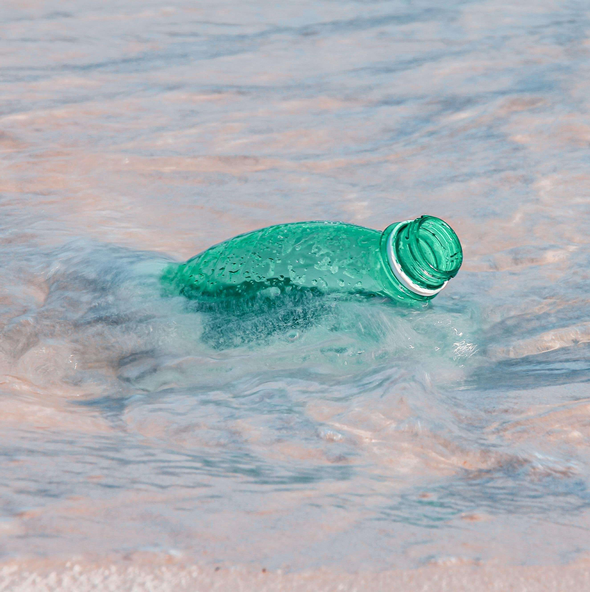
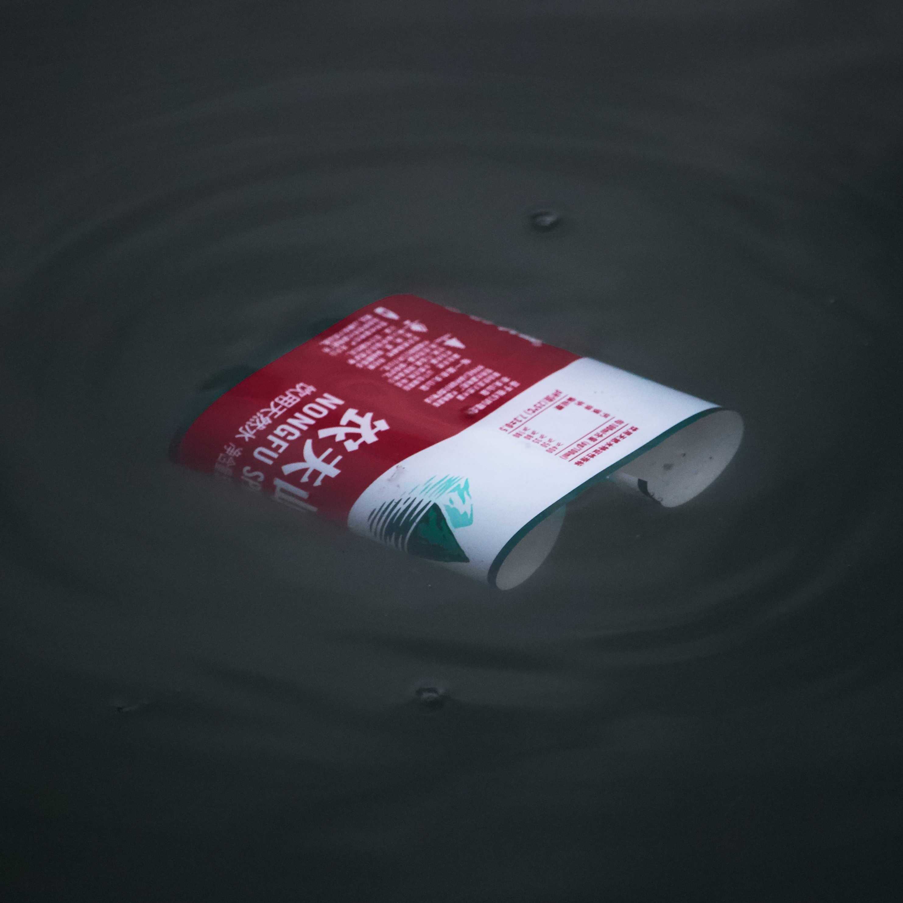

Mini trivia: ¿Cuánto sabes sobre el océano y el cuidado del agua?
Tips simples para cuidar el océano desde casa

Evita plásticos de un solo uso
Usa termos, cubiertos reutilizables y lleva tu bolsa al súper.

Cuida el agua
Cierra la llave mientras te cepillas los dientes o lavas los trastes.

No tires residuos al drenaje
Aceites, pinturas o medicamentos contaminan directamente los ríos y mares.

Revisa tus productos de limpieza
Elige opciones biodegradables, sin químicos fuertes.